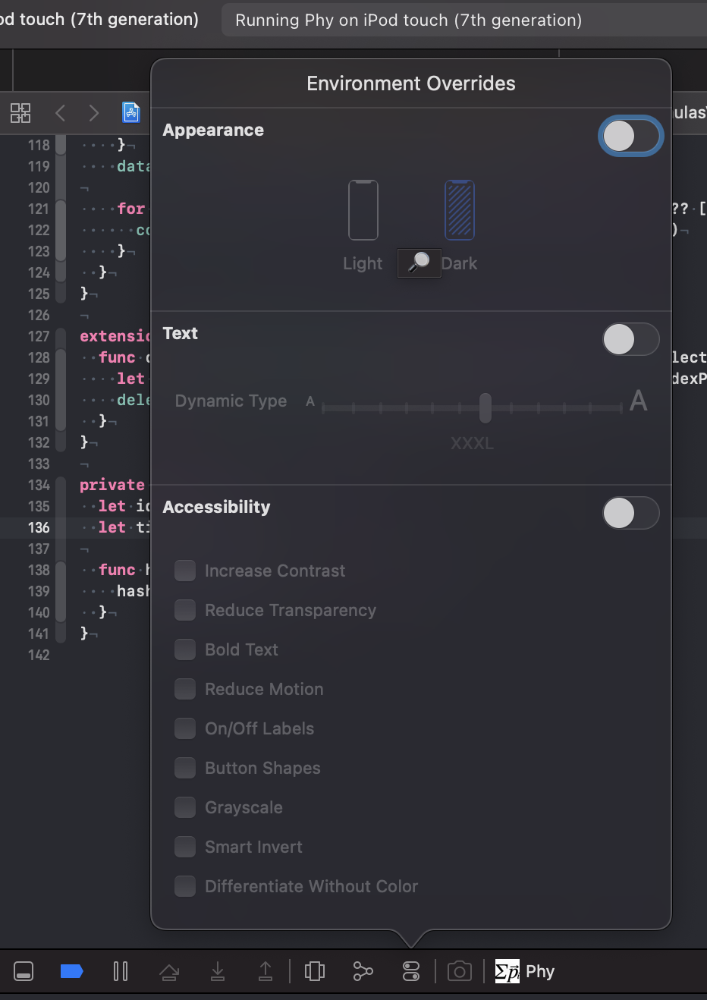
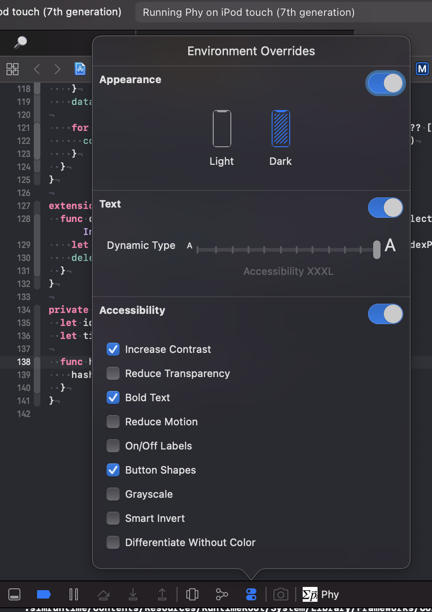
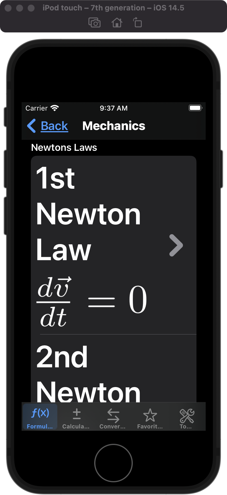

Environment Overrides
The environment our apps are running in is complex. There is dark and light mode, the font size can change because of Dynamic Type, the user can ask to deactivate animations or to increase contrast. A good app manage to look and work good in all these circumstances. We as developers are responsible to respect all these environment variables.
The simulator already allows to change the font size and switch between dark and light mode in the settings app on the running simulator. But there is even a faster way.
When the app is running on the simulator and the debugger is attached to it, Xcode shows the debug bar. The icon with the settings handles opens the Environment Overrides pop up.
In the pop up window you can
- switch the appearance between dark and light mode.
- change the Dynamic Type size.
- set several accessibility settings like Increase Contrast, Grayscale and Smart Invert.
This way you can easily check if you app works and looks good for the most important environment variables.
Example
For example, the formulary app I’m working on right now supports Dynamic Type and dark mode. With a few click I can change the environment for my app to this:
The result looks like this:
